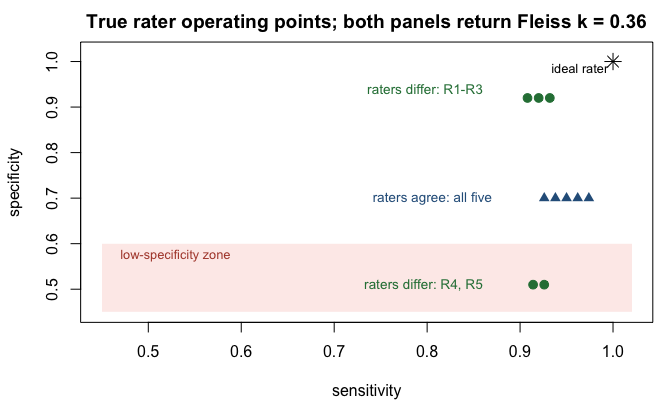
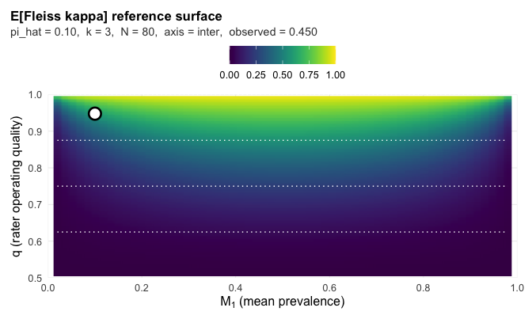
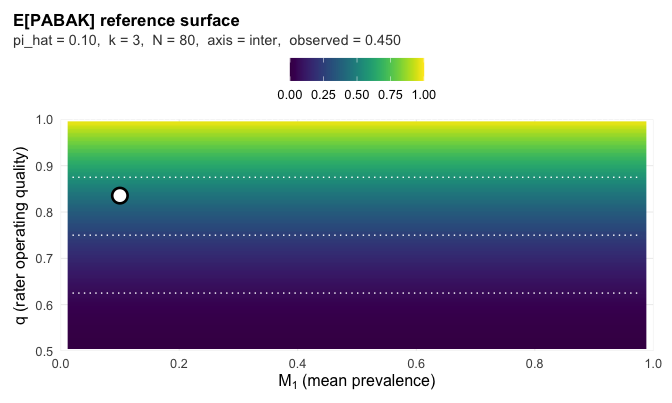

grassr: rater reliability on binary outcomes, from rating matrix to Report Card
Austin Semmel
Rachel Gidaro
2026-09-05
Source:vignettes/grassr.Rmd
grassr.RmdIntroduction: the prevalence trap
A rater panel consists of k entities
that each assess the performance of N subjects for the
successful completion of a binary task, as defined by a study protocol.
Raters observe each subject exactly once, which produces an
N x k rating matrix of yes-or-no responses. Both the level
of agreement across the panel and the consistency of individual raters
over time are of primary concern. Traditionally, this is referred to as
inter- and intra-rater reliability and is answered with a single
coefficient and a label from Landis and Koch (1977), where 0.00 to 0.20
is slight, 0.21 to 0.40 fair, 0.41 to 0.60
moderate, 0.61 to 0.80 substantial, and 0.81 to 1.00
almost perfect. Koo and Li (2016) give the analogous ranges for
the intraclass correlation coefficient (ICC).
However, traditional kappa-based statistics do not account for the underlying context (the prevalence, rater count, and sample size of the study). The chance term they subtract depends on prevalence, so the coefficient can vary even when the rater quality itself remains constant. The code below fixes two raters at quality 0.87, meaning each calls 87% of cases correctly, sweeps prevalence from 2% to 98%, and plots the expected Cohen’s kappa against the Landis and Koch bands.
q <- 0.87 # every rater calls 87% of cases correctly
prev <- seq(0.02, 0.98, 0.005)
Pa <- q^2 + (1 - q)^2 # P(two such raters agree); prevalence-free
pip <- prev * q + (1 - prev) * (1 - q) # observed positive rate
kappa <- (Pa - (pip^2 + (1 - pip)^2)) / (1 - (pip^2 + (1 - pip)^2))
op <- par(mar = c(4.2, 4.2, 2.4, 1))
plot(prev, kappa, type = "l", lwd = 2, ylim = c(0, 0.8),
xlab = "prevalence of the finding", ylab = "expected Cohen's kappa",
main = "Same raters (q = 0.87) at every prevalence")
abline(h = c(0.20, 0.40, 0.60), lty = 3, col = "grey55")
text(rep(0.99, 4), c(0.10, 0.30, 0.50, 0.70), adj = 1, col = "grey40",
cex = 0.8, labels = c("slight", "fair", "moderate", "substantial"))
pts <- c(0.05, 0.50, 0.90)
ptk <- sapply(pts, function(p) {
pp <- p * q + (1 - p) * (1 - q)
(Pa - (pp^2 + (1 - pp)^2)) / (1 - (pp^2 + (1 - pp)^2))
})
points(pts, ptk, pch = 19)
text(pts, ptk + 0.05, sprintf("%.2f", ptk), cex = 0.85)
One panel of raters, three published verdicts.
par(op)A screening study at 5% prevalence reports slight agreement, a balanced study reports moderate, a high-prevalence study reports fair, and the raters never changed. How far one study’s value scatters around this curve depends on rater count and sample size, and the fixed scale ignores that too. Three multi-rater agreement coefficients, Fleiss’ kappa, PABAK taken as the mean over rater pairs, and Gwet’s AC1, return three different values on one dataset for the same reason. Fleiss’ kappa computes the chance term from the panel’s observed positive rate, and the term rises toward one as prevalence moves away from 50%. PABAK (prevalence-adjusted bias-adjusted kappa; Byrt, Bishop, and Carlin, 1993) fixes it at one half. AC1 (Gwet, 2008) computes it from the same positive rate, and the term falls toward zero as prevalence moves away from 50%. Same data, three chance terms, three labels.
grassr, a Guide for Rater Agreement under Structural Skew, is built for that problem. The skew in the name refers to prevalence. The package takes the rating matrix as its only input, simulates panels at the study’s own prevalence, rater count, and sample size, a combination we call the study context, and compares each observed coefficient with the values those panels produce. The result prints as a Report Card. For each coefficient it shows where the value falls among everything a study this size, at this prevalence, could have produced as rater quality runs from low to high, and which rater qualities are consistent with it.
Quick start: the GRASS Report Card
The input is one matrix or data frame, subjects in rows and raters in
columns, with at least two raters. Cells are numeric 0/1,
logical, or a two-level factor or character
column, where 1, TRUE, or the positive level means present.
For a factor or character column the level named yes, true, positive,
present, or case, in any letter case, is taken as positive; any other
pair of labels is refused with a message asking for a 0/1 recode, so an
outcome is never inverted silently. Drop identifier columns before the
call. Column names, if given, become rater labels on the card. The
functions stop on NA rather than silently dropping rows, so
filter first with Y <- Y[complete.cases(Y), ] and report
the exclusions in your Methods. Binary outcomes only.
The examples simulate the panel, so the true classes are known and every claim below can be checked against them. This first panel has 150 subjects at 30% prevalence and three raters who each call 87% of cases correctly.
library(grassr)
set.seed(7)
truth <- rbinom(150, 1, 0.30) # the latent true classes
Y0 <- sapply(1:3, function(j) # three raters, 87% accurate
ifelse(truth == 1, rbinom(150, 1, 0.87), rbinom(150, 1, 0.13)))
colnames(Y0) <- c("R1", "R2", "R3")
head(Y0, 8)
#> R1 R2 R3
#> [1,] 1 0 1
#> [2,] 0 0 0
#> [3,] 0 0 1
#> [4,] 0 0 0
#> [5,] 0 0 0
#> [6,] 1 1 1
#> [7,] 0 0 0
#> [8,] 1 1 0Row 6 is unanimously positive, rows 2, 4, 5, and 7 unanimously
negative, and rows 1, 3, and 8 split. One call produces the card. Inside
a script, assign the result and print() it; the same goes
for plot().
grass_report(ratings = Y0)
#> GRASS Report Card
#>
#> sample = 3 raters, N = 150, pi_hat = 0.36
#> PABAK = 0.52 -> 70th percentile | quality 0.80-0.90 <- primary
#> AC1 = 0.55 -> 70th percentile | quality 0.80-0.90
#> Fleiss kappa = 0.48 -> 71st percentile | quality 0.80-0.90
#> ICC = 0.62 -> 72nd percentile | quality 0.81-0.90 [distribution-sensitive]
#> read: this panel's agreement exceeds 70% of what panels in this study context can produce; the data are consistent with panel quality 0.80-0.90.
#> delta = 0.00 pp implied-quality spread (aligned)
#> matched null = (k=3, N=150, q=0.86): delta_hat sits at percentile 11.6 of the null
#>
#> Notes:
#> - ICC reference only: N=150 uses the nearest calibrated N=100. The agreement-family surfaces and the delta_hat null interpolate at N=150.
#> - delta_hat is the implied-quality spread over the agreement family (PABAK, mean AC1, Fleiss kappa). ICC is shown but not included in delta_hat; its reference depends on how positive probability is spread across subjects, while the other three depend only on prevalence and quality.
#> - flag from delta_hat's percentile on the matched null (k=3, N=150, q=0.86, prev=0.31; 50,000 draws); null interpolated between calibrated grid nodes.
#>
#> See `summary(...)` for full panel and CI details.
#> See `plot(...)` for a surface-position visualization.-
sampleis the study: rater countk, subject countN, and the observed positive ratepi_hat, the share of allN x kratings that are positive. Herepi_hatis 0.36 against a true prevalence of 0.30, because false positives on the many negatives outnumber misses on the few positives. -
The coefficient lines show each observed value, its
percentile, and its consistency band. The percentile is
where the observed value falls among everything this study could have
produced, from the lowest-quality panels in the reference to the
highest. Panel quality
qis the share of cases a rater gets correct. The reference panels give every rater the sameqfor both sensitivity and specificity, andqis what the package is estimating. The consistency band is the range of qualities that could plausibly have produced this coefficient. Formally, it is everyqat which the observed value sits inside the middle 95% of that quality’s panels. A wide band means the study cannot tell those qualities apart, and a small study always gives a wide band. -
<- primarymarks the coefficient to report: PABAK at moderate prevalence, AC1 when the positive rate is below 0.15 or above 0.85 (0.20 or 0.80 at two raters), where its percentile is less noisy. ICC is tagged[distribution-sensitive]because its reference depends on how the positives are spread across subjects, a few obvious cases or many borderline ones, and not just on how many there are, so its percentile is less certain than the other three. -
The
read:line restates the headline in plain language. The card prints no verdict label, and the band’s width states the uncertainty. -
deltaisdelta_hatas the card prints it, the spread of the qualities implied by PABAK, AC1 (both averaged over rater pairs), and Fleiss’ kappa, in percentage points (pp), followed by its flag. The next section covers the flag.
Intra-rater agreement, one rater scoring the same
subjects on repeated occasions, uses the same layout with the occasions
as columns and the call grass_report(Y, axis = "intra").
The same reference applies, since a rater re-reading the same subjects
is modeled exactly like independent raters of equal quality, and the
card has the same fields. On this axis the card marks ICC as primary,
the conventional intra-rater statistic; the three agreement coefficients
still print and still feed delta_hat. The card’s note says
which way the two departures from that model push the reading: drift
between occasions lowers it, and memory of an earlier pass raises
it.
When coefficients disagree: the delta_hat flag
Every coefficient on the card can be turned back into a panel
quality. PABAK has a formula,
q_hat = (1 + sqrt(PABAK)) / 2; the others are looked up on
their reference surfaces. delta_hat is the gap between the
highest and lowest of those qualities across PABAK, AC1, and Fleiss’
kappa, in percentage points of quality, so a spread of 0.42 pp is 0.0042
on the 0-to-1 quality scale. ICC is left out because its reference
depends on more than prevalence and quality.
Some spread happens by chance even when every rater is equally good,
so the observed spread is compared with what equal-quality panels
produce at the same rater count, sample size, quality, and prevalence.
That is the matched null, and the card prints which cell it used. Below
the null’s 95th percentile the flag is aligned, from the
95th caution, from the 99th divergent. The
null uses the true prevalence implied by the observed rate and quality,
which the card prints as prev, so prev and
pi_hat differ. With two raters PABAK and AC1 always agree
on quality, so the flag is not_applicable.
An aligned panel can be summarized by one number. A divergent one
cannot, because one number can hide a real difference between raters, so
the card drops the bands and the read: line, marks the
panel summary suppressed, and shows the raters one at a
time in three views. A matrix of pairwise PABAK values fills the lower
triangle, with each pair’s percentile at its own positive rate in the
upper. A table scores each rater against the majority vote of the other
raters (Se_tilde and Sp_tilde, excluding
subjects on which the majority tied). A latent-class fit, the Dawid and
Skene (1979) model, estimates each rater’s sensitivity and specificity
from the rating matrix alone. Start with the majority table. It compares
each rater with the other raters’ votes, which are observed, so unlike
the latent-class fit it can never mix up which class is positive. An
over-caller shows high Se_tilde and lower
Sp_tilde, an under-caller the reverse.
Case studies
Case 1: three labels, one position
Five raters score 1,000 subjects. Every rater operates at quality 0.87 and the finding has true prevalence 0.15.
gen_flat <- function(N, prev, Se, Sp, k, seed) {
set.seed(seed)
C <- rbinom(N, 1L, prev)
sapply(seq_len(k), function(j)
ifelse(C == 1L, rbinom(N, 1L, Se), rbinom(N, 1L, 1 - Sp)))
}
Y1 <- gen_flat(1000, prev = 0.15, Se = 0.87, Sp = 0.87, k = 5, seed = 61)The three coefficients draw three different fixed labels from this one panel: Fleiss’ kappa 0.36 reads fair, PABAK 0.54 reads moderate, AC1 0.64 reads substantial. A reader who saw only the labels would conclude they describe three different panels.
grass_report(Y1, verbose = FALSE)
#> GRASS Report Card
#>
#> sample = 5 raters, N = 1000, pi_hat = 0.24
#> PABAK = 0.54 -> 74th percentile | quality 0.85-0.90 <- primary
#> AC1 = 0.64 -> 74th percentile | quality 0.85-0.90
#> Fleiss kappa = 0.36 -> 74th percentile | quality 0.85-0.90
#> ICC = 0.48 -> 63rd percentile | quality 0.80-0.85 [distribution-sensitive]
#> read: this panel's agreement exceeds 74% of what panels in this study context can produce; the data are consistent with panel quality 0.85-0.90.
#> delta = 0.00 pp implied-quality spread (aligned)
#> matched null = (k=5, N=1000, q=0.87): delta_hat sits at percentile 36.4 of the null
#>
#> Notes:
#> - Consistency band narrower than the calibrated q-grid spacing; endpoints interpolated within one grid gap.
#> - delta_hat is the implied-quality spread over the agreement family (PABAK, mean AC1, Fleiss kappa). ICC is shown but not included in delta_hat; its reference depends on how positive probability is spread across subjects, while the other three depend only on prevalence and quality.
#> - flag from delta_hat's percentile on the matched null (k=5, N=1000, q=0.87, prev=0.14; 50,000 draws); null interpolated between calibrated grid nodes.
#>
#> See `summary(...)` for full panel and CI details.
#> See `plot(...)` for a surface-position visualization.Each agreement coefficient sits at the 74th percentile of what this study context can produce, and each returns the same band, quality 0.85 to 0.90, which contains the true 0.87. ICC sits apart, at the 63rd percentile with band 0.80 to 0.85, on its distribution-sensitive reference. The labels disagreed because one fixed scale was applied to three statistics with three different chance terms.
Case 2: the latent split
Five raters score 1,000 subjects at true prevalence 0.30. Three sit at sensitivity and specificity 0.92, and two keep that sensitivity but drop to specificity 0.51. The panel returns Fleiss’ kappa 0.36, which a fixed scale would label fair.
gen_logitnormal <- function(seed, k, N, Se, Sp, pi, F_sigma2 = 0.25) {
set.seed(seed)
p_i <- plogis(rnorm(N, qlogis(pi), sqrt(F_sigma2)))
C <- rbinom(N, 1L, p_i)
Y <- matrix(0L, N, k)
for (j in seq_len(k)) Y[, j] <- rbinom(N, 1L, ifelse(C == 1L, Se[j], 1 - Sp[j]))
Y
}
Y_split <- gen_logitnormal(51L, 5L, 1000L,
Se = rep(0.92, 5),
Sp = c(0.92, 0.92, 0.92, 0.51, 0.51), pi = 0.30)
grass_report(Y_split, bootstrap_B = 200, verbose = FALSE)
#> GRASS Report Card
#>
#> sample = 5 raters, N = 1000, pi_hat = 0.47
#> PABAK = 0.36 -> 58th percentile <- primary
#> AC1 = 0.38 -> 60th percentile
#> Fleiss kappa = 0.36 -> 58th percentile
#> ICC = 0.46 -> 58th percentile [distribution-sensitive]
#> summary = suppressed (divergent)
#> delta = 0.42 pp (divergent)
#> matched null = (k=5, N=1000, q=0.80): delta_hat sits at percentile 99.5 of the null
#>
#> pairwise PABAK / surface percentile (lower / upper):
#> R1 R2 R3 R4 R5
#> R1 -- 84% 84% 48% 40%
#> R2 0.71 -- 81% 45% 41%
#> R3 0.70 0.67 -- 45% 41%
#> R4 0.27 0.24 0.25 -- 35%
#> R5 0.21 0.22 0.21 0.17 --
#>
#> per-rater vs the majority of the OTHER raters:
#> R1 Se_tilde = 0.84 Sp_tilde = 0.93 (n_pos = 360, n_neg = 457, excl = 183)
#> R2 Se_tilde = 0.85 Sp_tilde = 0.91 (n_pos = 352, n_neg = 460, excl = 188)
#> R3 Se_tilde = 0.83 Sp_tilde = 0.92 (n_pos = 351, n_neg = 459, excl = 190)
#> R4 Se_tilde = 0.92 Sp_tilde = 0.51 (n_pos = 327, n_neg = 581, excl = 92)
#> R5 Se_tilde = 0.88 Sp_tilde = 0.50 (n_pos = 330, n_neg = 579, excl = 91)
#>
#> per-rater (latent-class fit):
#> R1 Se = 0.93 (0.89, 0.96) Sp = 0.93 (0.92, 0.96)
#> R2 Se = 0.92 (0.89, 0.95) Sp = 0.91 (0.88, 0.93)
#> R3 Se = 0.89 (0.86, 0.93) Sp = 0.91 (0.88, 0.94)
#> R4 Se = 0.93 (0.90, 0.96) Sp = 0.51 (0.47, 0.55)
#> R5 Se = 0.89 (0.86, 0.92) Sp = 0.50 (0.46, 0.54)
#>
#> Notes:
#> - delta_hat is the implied-quality spread over the agreement family (PABAK, mean AC1, Fleiss kappa). ICC is shown but not included in delta_hat; its reference depends on how positive probability is spread across subjects, while the other three depend only on prevalence and quality.
#> - flag from delta_hat's percentile on the matched null (k=5, N=1000, q=0.80, prev=0.45; 50,000 draws); null interpolated between calibrated grid nodes.
#>
#> See `summary(...)` for full panel and CI details.
#> See `plot(...)` for a surface-position visualization.The observed coefficients look ordinary, but the spread of implied
quality, 0.42 percentage points, sits at the 99.5th percentile of what
chance produces in this study context, where equal-quality raters rarely
spread by more than a hundredth of a percentage point. The card
therefore does not average the panel into one number. The pairwise
matrix separates the panel at a glance, with R1 to R3 agreeing at the
81st to 84th percentile and every pair involving R4 or R5 at the 48th or
below. The majority table shows R4 and R5 as over-callers,
Sp_tilde 0.51 and 0.50 against 0.91 to 0.93 for the rest,
and the latent-class fit puts their specificity at 0.51 and 0.50. This
panel does not need more raters or more subjects. It needs R4 and R5
retrained on when to call a case negative.
Case 3: when coefficients cannot disagree (k = 2)
grass_report() works the same way at k = 2, with a
shorter card. The package computes Cohen’s kappa for a pair but has no
calibrated reference for it, so it is not positioned, and Fleiss’ kappa
and the ICC are computed for three or more raters.
set.seed(42)
N <- 200
truth <- rbinom(N, 1, 0.30)
Y_k2 <- cbind(
ifelse(truth == 1, rbinom(N, 1, 0.85), rbinom(N, 1, 0.15)),
ifelse(truth == 1, rbinom(N, 1, 0.85), rbinom(N, 1, 0.15))
)
grass_report(ratings = Y_k2)
#> GRASS Report Card
#>
#> sample = 2 raters, N = 200, pi_hat = 0.39
#> PABAK = 0.50 -> 69th percentile | quality 0.80-0.90 <- primary
#> AC1 = 0.52 -> 69th percentile | quality 0.80-0.90
#> read: this panel's agreement exceeds 69% of what panels in this study context can produce; the data are consistent with panel quality 0.80-0.90.
#> delta = 0.00 pp implied-quality spread (not_applicable)
#> matched null = n/a at k = 2 (PABAK and AC1 imply the same quality; see the pairwise table and the Hui-Walter bounds)
#>
#> Notes:
#> - delta_hat is not applicable at k = 2: the two-coefficient agreement family (PABAK, AC1) implies identical panel quality by construction, so cross-coefficient discordance cannot be observed. Use the k = 2 identifiable bounds and pairwise path for asymmetry assessment.
#>
#> See `summary(...)` for full panel and CI details.
#> See `plot(...)` for a surface-position visualization.With two raters only PABAK and AC1 remain, and they always agree on
quality, so delta_hat is not_applicable. Two
raters also cannot pin down each rater’s own sensitivity and
specificity, so the latent-class fit returns the range the data allow,
the Hui and Walter (1980) bounds, instead of point estimates.
latent_class_fit(ratings = Y_k2, B = 200)
#> grass latent-class fit
#> method : hui_walter
#> raters (k) : 2
#> bootstrap B : 200
#> per-rater
#> R1 Se in [0.395, 1.000] Sp in [0.605, 1.000] (bounds)
#> R2 Se in [0.385, 1.000] Sp in [0.615, 1.000] (bounds)
#>
#> Note: at k = 2, per-rater Se/Sp are not point-identified
#> without external information. The intervals are
#> Hui-Walter (1980) inequality bounds, not point
#> estimates with sampling uncertainty.The bounds are the most a two-rater matrix can say. A study that needs one sensitivity and specificity per rater should add a third rater.
Reporting the result
Two things belong in every write-up whatever the flag: the exclusions
(which subjects were dropped for missing ratings) and the package
version, which summary() prints. What follows depends on
the flag.
An aligned card is reported as one coefficient with its position and band. From Case 1: “Five raters rated 1,000 subjects, observed positive rate 0.24. PABAK was 0.54, at the 74th percentile of what a five-rater, 1,000-subject study at this positive rate can produce, and the data are consistent with panel quality 0.85 to 0.90. The three agreement coefficients implied the same quality (spread 0.00 pp, aligned).”
A divergent card is reported rater by rater, and the coefficient values appear only as description. From Case 2: “Five raters rated 1,000 subjects, observed positive rate 0.47. The qualities implied by the three agreement coefficients were 0.42 percentage points apart, at the 99.5th percentile of the spread that equal-quality raters produce in this study context, so the panel is not summarized by one coefficient. Pairwise PABAK among R1 to R3 was 0.67 to 0.71 (81st to 84th percentile) and 0.17 to 0.27 for every pair involving R4 or R5 (35th to 48th). Against the majority of the other raters, R4 and R5 had specificity 0.51 and 0.50 versus 0.91 to 0.93 for the rest; a latent-class fit placed them at 0.51 and 0.50 (95% bootstrap intervals 0.47 to 0.55 and 0.46 to 0.54).”
A two-rater card has no flag to report. From Case 3: “Two raters rated 200 subjects, observed positive rate 0.39. PABAK was 0.50, at the 69th percentile of what a two-rater, 200-subject study at this positive rate can produce, and the data are consistent with panel quality 0.80 to 0.90. With two raters the coefficients cannot disagree about quality, so no consistency check applies, and each rater’s sensitivity and specificity are reported as the Hui and Walter bounds rather than as point estimates.” Check the numbers against your own card; the ones here are the Case 3 card’s.
An intra-rater card is reported the same way with occasions in place
of raters and ICC in the lead, in the shape “One coder coded N subjects
on three occasions; ICC was X, at the Yth percentile of what a
three-occasion, N-subject study at this positive rate can produce, and
the data are consistent with coder quality A to B.” State the interval
between occasions, since memory of an earlier pass raises the reading.
The intervals on the latent-class table are 95% percentile bootstrap
intervals, from bootstrap_B resamples (1,000 by default;
the examples here use 200 to run quickly).
Boundaries
Shared panel bias. A second five-rater panel at the same prevalence returns the same Fleiss’ kappa 0.36 as the split panel in Case 2, but all five raters share sensitivity 0.95 and specificity 0.70. A fixed scale calls both fair.

Two panels with one coefficient value and two different internal structures.
This is the case agreement diagnostics miss.
grass_report(Y_shared, verbose = FALSE)
#> GRASS Report Card
#>
#> sample = 5 raters, N = 1000, pi_hat = 0.49
#> PABAK = 0.36 -> 56th percentile | quality 0.75-0.85 <- primary
#> AC1 = 0.36 -> 56th percentile | quality 0.75-0.85
#> Fleiss kappa = 0.36 -> 56th percentile | quality 0.75-0.85
#> ICC = 0.47 -> 61st percentile | quality 0.76-0.85 [distribution-sensitive]
#> read: this panel's agreement exceeds 56% of what panels in this study context can produce; the data are consistent with panel quality 0.75-0.85.
#> delta = 0.00 pp implied-quality spread (aligned)
#> matched null = (k=5, N=1000, q=0.80): delta_hat sits at percentile 29.2 of the null
#>
#> Notes:
#> - delta_hat is the implied-quality spread over the agreement family (PABAK, mean AC1, Fleiss kappa). ICC is shown but not included in delta_hat; its reference depends on how positive probability is spread across subjects, while the other three depend only on prevalence and quality.
#> - flag from delta_hat's percentile on the matched null (k=5, N=1000, q=0.80, prev=0.48; 50,000 draws); null interpolated between calibrated grid nodes.
#>
#> See `summary(...)` for full panel and CI details.
#> See `plot(...)` for a surface-position visualization.The card raises no flag, yet the panel calls about half its subjects positive when the true prevalence is 0.30. Every rater shares the same specificity deficit, so the shared error raises every rater’s positive rate together and no internal comparison can see it. Agreement diagnostics detect raters who disagree with each other, not a panel that is wrong together. Only an external reference standard catches the shared error.
ICC and the subject-prevalence distribution. PABAK,
AC1, and Fleiss’ kappa depend only on the positive rate and the rater
quality. ICC depends additionally on the full distribution of
subject-level positive probabilities; two studies can share a 30%
positive rate and differ on whether it comes from obvious positives or
borderline cases. The bundled reference covers a 48-point logit-normal
grid plus four discrete-mixture profiles, and a panel whose true
distribution lies off that grid has its ICC percentile computed against
a reference that does not match it. That is why ICC prints a
[distribution-sensitive] marker and stays out of
delta_hat. The card’s ICC is ICC(1,1), a one-way
random-effects model fitted on the logit scale; the package computes no
other variant.
Clamping. Every study context has a range of
coefficient values it can produce, and an observed value occasionally
lands outside that range. No quality produces that value, so the package
uses the nearest edge of the range and marks it
clamped = TRUE. A clamped reading is a floor or a ceiling
rather than a measurement, so grass_report() drops clamped
coefficients from delta_hat whenever at least two unclamped
ones remain, and reports the clamp in the Notes and in the
panel data frame’s clamped and
reference_used columns. Clamping is rare. Even at 8%
prevalence, near the low edge of the calibrated grid, every coefficient
of this five-rater panel inverts cleanly.
Y_edge <- gen_logitnormal(5L, 5L, 1000L,
Se = rep(0.85, 5), Sp = rep(0.85, 5), pi = 0.08)
card_edge <- grass_report(Y_edge, bootstrap_B = 50)
card_edge$panel[, c("coefficient", "surface_percentile",
"clamped", "reference_used")]
#> coefficient surface_percentile clamped reference_used
#> 1 pabak 67.75940 FALSE closed-form
#> 2 mean_ac1 67.67115 FALSE closed-form
#> 3 fleiss_kappa 67.78800 FALSE closed-form
#> 4 icc 51.13636 FALSE fitted-iccDesigns the matrix cannot reveal. The calibration assumes every row is a new subject, and a 0/1 matrix does not say which rows share a patient. Practitioners should avoid stacking the repetitions of one patient as rows, since the repetitions are not independent trials; stacking them overstates the number of subjects and leads to overstated confidence in the reported quality bands. Build one matrix per repetition and compare the cards, or fix one repetition per patient by protocol. When the same patients are scored across sessions over time, each session is a valid panel. One card per session, compared in order, shows whether agreement held over time. Pooling sessions into one number, or splitting disagreement into patient, session, and rater components, is a variance-component analysis and belongs in a mixed model, outside this package.
Study planning and modular functions
Planning a study. Before any data exist,
plot_surface() draws a coefficient’s expected-value
surface, the value a panel of each quality produces at each prevalence,
for a planned rater count and sample size. The observed
argument pins a hypothetical value at the planned positive rate. That
turns the picture into the planning question: what quality would that
value mean in this study, and how far would the same value drift if the
prevalence came in differently. The dotted lines mark the quality bands
the card uses. A screening study plans three raters, 80 subjects, and a
positive rate near 10%, and asks what a Fleiss’ kappa of 0.45 would
mean.
plot_surface("fleiss_kappa", pi_hat = 0.10, k = 3, N = 80, observed = 0.45)
Planning view: Fleiss’ kappa for three raters and 80 subjects, with an observed 0.45 pinned at a 10% positive rate.
At 10% prevalence the pinned 0.45 implies a panel near quality 0.95. The same 0.45 at balanced prevalence would imply a panel near 0.84, because the surface falls away from 50% on both sides. A protocol that fixes a kappa target without fixing the prevalence it applies to has fixed nothing. PABAK’s surface for the same study is flat across prevalence, which is why it is the primary coefficient at moderate prevalence.
plot_surface("pabak", pi_hat = 0.10, k = 3, N = 80, observed = 0.45)
Planning view: PABAK for the same study, with the same observed 0.45 pinned.
The same question with a number instead of a picture:
position_on_surface() takes the hypothetical value and the
planned study context, with no rating matrix, and returns the implied
quality, its percentile, and the consistency band the planned study
would give. The metric names are "pabak",
"mean_ac1", "fleiss_kappa", and
"icc". In a script, assign and print() this
result and the plots above, as with the card.
position_on_surface(0.45, "fleiss_kappa", pi_hat = 0.10, k = 3, N = 80)
#> grass surface-position report
#> metric : fleiss_kappa
#> observed value : 0.450
#> design (pi_hat,k,N) : (0.100, 3, 80)
#> implied quality q_hat: 0.948 +/- 0.019
#> percentile : 90.2 (of the achievable range in this study context)
#> consistency band : consistent with panel quality 0.90-0.99 (95%)Each stage of grass_report() on its
own.
position_on_surface(ratings = Y1, metric = "pabak")
#> grass surface-position report
#> metric : pabak
#> observed value : 0.537
#> design (pi_hat,k,N) : (0.237, 5, 1000)
#> implied quality q_hat: 0.866 +/- 0.005
#> percentile : 73.9 (of the achievable range in this study context)
#> consistency band : consistent with panel quality 0.85-0.90 (95%)
#> notes :
#> - Consistency band narrower than the calibrated q-grid spacing; endpoints interpolated within one grid gap.position_on_surface() returns the percentile, the band,
the implied quality, and, for one coefficient, its position within the
sampling distribution at every calibrated quality level, the profile
behind the band.
check_asymmetry(ratings = Y1)
#> GRASS panel asymmetry diagnostic
#>
#> delta_hat = 0.0 pp (spread of the implied panel qualities)
#> flag = aligned (36.4 percentile of matched null: k=5, N=1000, q=0.87)
#>
#> panel:
#> coefficient observed implied q pooled pctile in delta_hat
#> pabak 0.54 0.866 73.9 yes
#> mean_ac1 0.64 0.866 73.9 yes
#> fleiss_kappa 0.36 0.866 73.9 yes
#> icc 0.48 0.822 62.5 no [distribution-sensitive]
#>
#> Surface caveats:
#> - Consistency band narrower than the calibrated q-grid spacing; endpoints interpolated within one grid gap.
#> - ICC reference: a logit-normal profile fitted to the ratings (mu=-1.775, tau2=3.089) was matched to the nearest calibrated profile (mu=-1.386, tau2=4.0000).
#> - ICC reference: calibrated profile LN_mu=-1.386_tau2=4.0000 at k=5, N=1000 (logit_normal family, mean prevalence 0.300).
#> - delta_hat is the implied-quality spread over the agreement family (PABAK, mean AC1, Fleiss kappa). ICC is shown but not included in delta_hat; its reference depends on how positive probability is spread across subjects, while the other three depend only on prevalence and quality.
#> - flag from delta_hat's percentile on the matched null (k=5, N=1000, q=0.87, prev=0.14; 50,000 draws); null interpolated between calibrated grid nodes.check_asymmetry() returns the spread and its flag
without per-rater detail.
pairwise_agreement(Y_split)
#> GRASS Pairwise Reliability
#>
#> sample = 5 raters, N = 1000, pi_hat = 0.47, axis = inter
#>
#> Pairwise PABAK (lower triangle = PABAK_ij; upper triangle = surface percentile):
#>
#> R1 R2 R3 R4 R5
#> R1 -- 84% 84% 48% 40%
#> R2 0.71 -- 81% 45% 41%
#> R3 0.70 0.67 -- 45% 41%
#> R4 0.27 0.24 0.25 -- 35%
#> R5 0.21 0.22 0.21 0.17 --
#>
#> Per-rater behavior against pooled panel-majority:
#>
#> rater Se_tilde Sp_tilde n_pos n_neg n_excl
#> R1 0.84 0.93 360 457 183
#> R2 0.85 0.91 352 460 188
#> R3 0.83 0.92 351 459 190
#> R4 0.92 0.51 327 581 92
#> R5 0.88 0.50 330 579 91
#> (Se_tilde, Sp_tilde are calls vs panel-majority of OTHER raters,
#> not against external truth. n_excl: subjects with tied majority,
#> excluded from the per-rater pool.)pairwise_agreement() returns the pairwise matrix and the
majority table for any panel, flagged or not, and is the table to report
in place of a panel coefficient when the flag is divergent.
latent_class_fit() is what the divergent card runs to
produce its latent-class table; called on its own it returns that table
for any panel, and at two raters the Hui and Walter bounds, as in Case
3.
Other views of a card.
card1 <- grass_report(Y1, verbose = FALSE)
summary(card1)
#> GRASS Report Card -- summary
#>
#> sample : k = 5 raters, N = 1000, pi_hat = 0.237, axis = inter
#>
#> primary coefficient
#> name : pabak
#> observed : 0.537
#> percentile : 73.86 (of the achievable range in this study context)
#> q_hat : 0.866
#> band : consistent with panel quality 0.85-0.90 (95%)
#>
#> delta (cross-coefficient asymmetry)
#> implied-q spread (pp) : 0.00
#> flag : aligned
#> delta percentile : 36.4 (percentile on the matched null, k=5, N=1000, q=0.87)
#>
#> panel (full table)
#> pabak observed = 0.537 q_hat = 0.866 pct = 73.86 quality 0.85-0.90 ref = closed-form
#> mean_ac1 observed = 0.637 q_hat = 0.866 pct = 73.86 quality 0.85-0.90 ref = closed-form
#> fleiss_kappa observed = 0.361 q_hat = 0.866 pct = 73.86 quality 0.85-0.90 ref = closed-form
#> icc observed = 0.484 q_hat = 0.822 pct = 62.50 quality 0.80-0.85 ref = fitted-icc
#>
#> notes
#> - Consistency band narrower than the calibrated q-grid spacing; endpoints interpolated within one grid gap.
#> - ICC reference: a logit-normal profile fitted to the ratings (mu=-1.775, tau2=3.089) was matched to the nearest calibrated profile (mu=-1.386, tau2=4.0000).
#> - ICC reference: calibrated profile LN_mu=-1.386_tau2=4.0000 at k=5, N=1000 (logit_normal family, mean prevalence 0.300).
#> - delta_hat is the implied-quality spread over the agreement family (PABAK, mean AC1, Fleiss kappa). ICC is shown but not included in delta_hat; its reference depends on how positive probability is spread across subjects, while the other three depend only on prevalence and quality.
#> - flag from delta_hat's percentile on the matched null (k=5, N=1000, q=0.87, prev=0.14; 50,000 draws); null interpolated between calibrated grid nodes.
#>
#> grass version : 0.8.0
#> timestamp : 2026-09-05 20:05:05summary() prints everything behind the card, the full
panel with percentiles and bands, every caveat from the surface lookup,
the package version, and the timestamp.
head(as.data.frame(card1), 5)
#> coefficient observed_value surface_percentile band_lo band_hi band_open_low
#> 1 pabak 0.5372000 73.86364 0.85125 0.89875 FALSE
#> 2 mean_ac1 0.6372062 73.86364 0.85125 0.89875 FALSE
#> 3 fleiss_kappa 0.3609191 73.86364 0.85125 0.89875 FALSE
#> 4 icc 0.4842583 62.50000 0.80125 0.84875 FALSE
#> band_open_high q_hat se_q_hat clamped reference_used in_delta_hat
#> 1 FALSE 0.8664693 0.005014575 FALSE closed-form TRUE
#> 2 FALSE 0.8664471 0.005014821 FALSE closed-form TRUE
#> 3 FALSE 0.8664693 0.005014575 FALSE closed-form TRUE
#> 4 FALSE 0.8217253 0.002468171 FALSE fitted-icc FALSE
#> is_primary delta_hat delta_percentile delta_flag matched_null_k
#> 1 TRUE 0.00221665 36.38975 aligned 5
#> 2 FALSE 0.00221665 36.38975 aligned 5
#> 3 FALSE 0.00221665 36.38975 aligned 5
#> 4 FALSE 0.00221665 36.38975 aligned 5
#> matched_null_N matched_null_q
#> 1 1000 0.8664693
#> 2 1000 0.8664693
#> 3 1000 0.8664693
#> 4 1000 0.8664693as.data.frame() returns one row per coefficient, for
binding many studies’ cards into one table. band_open_low
and band_open_high flag a band that reaches the edge of the
calibrated quality range; se_q_hat is the standard error of
the implied quality, and delta_hat is in quality percentage
points, the unit the card prints.
plot(card1)
The aligned panel pinned on its PABAK reference surface.
The default plot() places the panel on the
expected-value surface in its study context. Other views
(type = "thermometer" for the delta_hat gauge,
"panel", "intervals",
"per_rater", "diagnostic") are documented in
?plot.grass_card.
Reproducibility and references
Every percentile and consistency band above comes from a simulated
reference. The bundled calibration holds 44,616 surface cells at 2,000
draws each and 11,616 delta_hat null cells at 50,000 draws
each. Study contexts between calibrated cells are handled by
interpolation in quality, log sample size, and prevalence; rater count
snaps to the nearest calibrated value, so a panel of 17 raters uses the
15-rater reference. The card says so when a snap happens. The simulation
programs that produced the bundled references are in the source
repository under simulation/. The three case studies are
the accompanying paper’s worked examples, regenerated from the same
seeds.
- Semmel, A. & Gidaro, R. (2026). A context-conditioned reporting convention for rater reliability on binary outcomes. (Working paper.) The package is the computational companion to this work.
- Byrt, T., Bishop, J. & Carlin, J. B. (1993). Bias, prevalence and kappa. Journal of Clinical Epidemiology 46(5), 423-429.
- Cohen, J. (1960). A coefficient of agreement for nominal scales. Educational and Psychological Measurement 20(1), 37-46.
- Dawid, A. P. & Skene, A. M. (1979). Maximum likelihood estimation of observer error-rates using the EM algorithm. Applied Statistics 28(1), 20-28.
- Fleiss, J. L. (1971). Measuring nominal scale agreement among many raters. Psychological Bulletin 76(5), 378-382.
- Gwet, K. L. (2008). Computing inter-rater reliability and its variance in the presence of high agreement. British Journal of Mathematical and Statistical Psychology 61(1), 29-48.
- Hui, S. L. & Walter, S. D. (1980). Estimating the error rates of diagnostic tests. Biometrics 36(1), 167-171.
- Koo, T. K. & Li, M. Y. (2016). A guideline of selecting and reporting intraclass correlation coefficients for reliability research. Journal of Chiropractic Medicine 15(2), 155-163.
- Landis, J. R. & Koch, G. G. (1977). The measurement of observer agreement for categorical data. Biometrics 33(1), 159-174.